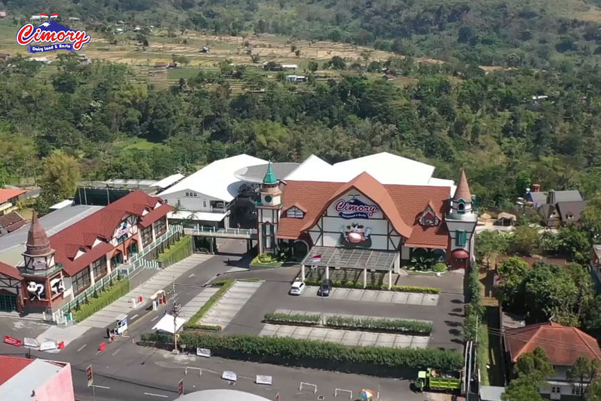
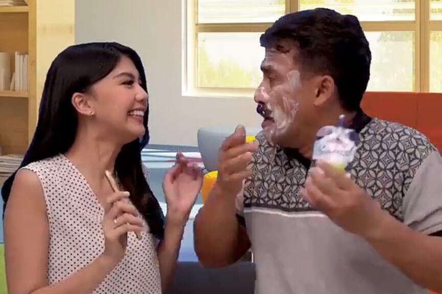

Berita
Lihat Semua


Media
Lihat Semua

CIMORY Indonesia - Company Profile

Baru, pembukaan Cimory dairyland Prigen!

Tiktok #Squeezeyuk Challenges @Anesya

Tiktok #Cucokcucucimory @Baldybrobryzxz
Tiktok #Cobaincimoryceger Challenges @Clarakangbakso

Tiktok #Cobaincimoryceger Challenges @mieke

Tiktok #Cobaincimoryceger Challenges @Baldybrobryzxz
Introduction Cimory UHT Milk Marie Biscuit!

Produk Kami

Produk Susu
Cimory Milk dan yogurt terbuat dari susu segar premium, diproses dan dikemas secara higienis menggunakan teknologi modern. Ini memiliki banyak pilihan rasa, dan sangat bergizi untuk Anda!